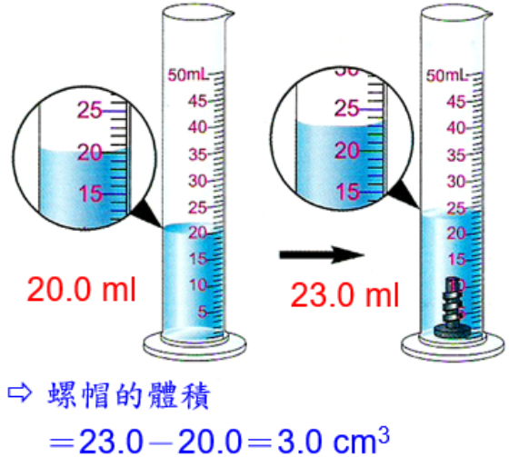
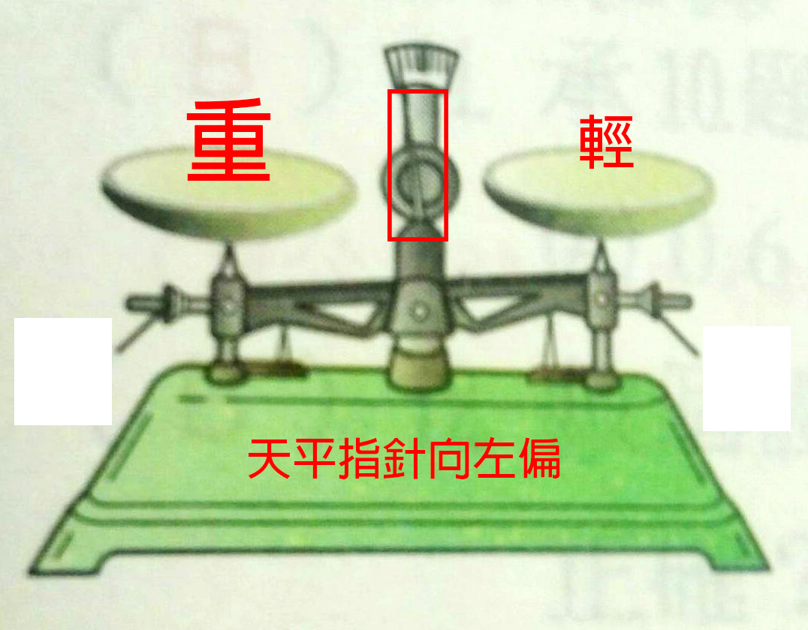
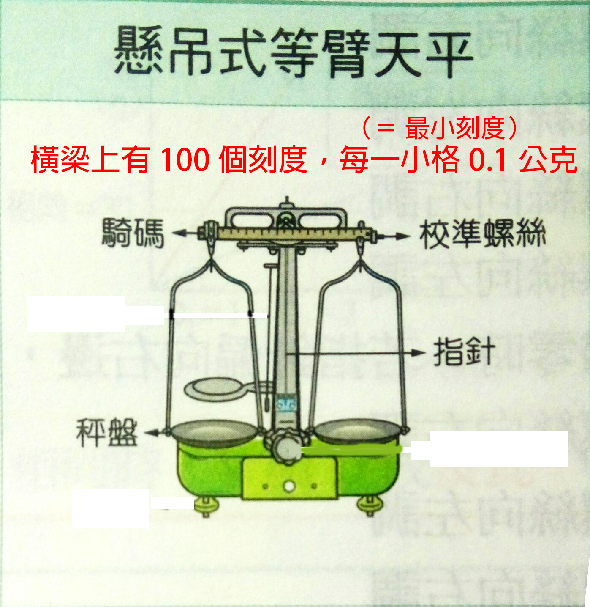
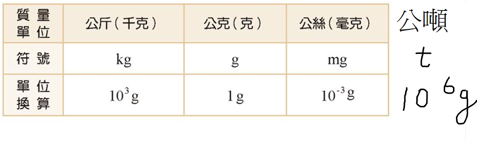

基本測量
Basic Measure
伽利略在十七世紀時主張以實驗來檢驗所有的真理，而測量室所有科學實驗的基礎，因此讓我們一起來學習「基本測量」。
1. 實驗是研究科學、證實理論很重要的重要方式，但實驗都免不了測量，通常會與一個選定的參考量（單位）做比較，才能得知測量值的大小。2. 使用不同的測量單位，會呈現出不同的測量數值，但值不變。3. 測量的單位須經過大家公認才能方便使用，因此國際間共同制定了一套標準：國際單位制（SI單位）。

a. 上皿天平操作過程：(1)將上皿天平擺放在水平桌面。(2)移動校準螺絲歸零。/Tip/若右盤較重，需將校準螺絲往左移動。(3)秤量物體時，待測物放左盤，砝碼放右盤。註1：砝碼須以砝碼夾拿取，若以手拿取，可能會導致生鏽，增加誤差。註2：砝碼從大到小逐步取用。/Tip/左盤質量較大時，指針偏左。（圖片自良師講義翻拍+自己編輯）
(4)當指針停在正中央時，砝碼總質量=待測物質量b. 懸掛式等臂天平:(1)基本構造：（圖片自良師講義翻拍+自己編輯）
(2)操作過程與上皿天平大致相似。(3)歸零時要將騎碼移至刻度0的位置。(4)待測物一定要放左盤，砝碼一定要放右盤（因為有騎碼）。/Tip/若右盤較重，需將校準螺絲往左移動。/Tip/左盤質量較大時，指針偏右。（圖片自康軒課本翻拍+自己編輯）(5)當指針停在正中央時，物體質量=砝碼質量+騎碼刻度*0.1c. 電子天平：(1)利用水平氣泡確認儀器是否擺置水平。(2)將秤量紙或容器置於天平中心並按壓歸零鈕。(3)螢幕顯示數字即為待測物質量。註1：定期使用砝碼校正天平。

a. 物質總質量與總體積的比值。b. 每單位體積所含的質量。
澤超連結：數學正反比定義※ 正比：當x改變時，y也隨著改變且y:x的比值為定值k(k≠0)，關係式y=kx※ 反比：當x改變時，y也隨著改變且x、y的成績為定值k(k≠0)，關係式xy=k